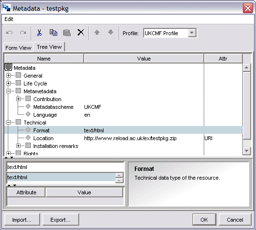

Add Metadata
The IMS Metadata specification (and the IEEE LOM, the standard influenced by IMS Metadata) provide a starting point for adding metadata, but ultimately, guidelines for implementing metadata at a local level are needed - to ensure that vocabularies are compatible, and that a common core of metadata is stored for all content in your locale.
Within the UK Education community, a second draft Metadata Framework (UK Learning Object Metadata Framework: http://www.cetis.ac.uk/profiles/uklomcore) has been produced (previously referred to as the UKCMF: UK Common Metadata Framework). It would be useful to look at the UK LOM Framework document if you wish to add metadata to your content as it provides helful guidance.
If you recall, when we initially set up the Content Package, we decided that we should conform to IMS Metadata v1.2.2. but didn't actually add any metadata. Now we can add Metadata.
The Form View is really just a simpler representation of the full metadata record, and it is possible to add information in the Tree View which is not shown in the Form View, even though the data is retained. For our purposes, Form View will be ideal.
Multiple Entries
If you wish to add more than one entry for a given element (for instance if you want to refer to content containing multiple mime types (e.g. a web page with a flash animation), you need to use the Tree View rather than the Form View.
If you go back to the Form View only the first element will be shown, but the information is stored and will be retained on save. This procedure is the same for any element which allows multiple entries.
Once you finish editing, your completed Metadata form (Tree View) may look like the one shown below.
Metadata for Individual Resources
So far we have only discussed adding metadata to the content package as a whole. Metadata can in fact be added to individual items in the package in exactly the same way - just right click on the item you want to annotate.